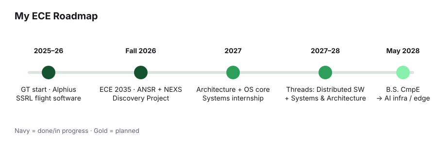

About me
I learn by building the thing.
I got into engineering through a robot. In high school at Innovation Academy I captained Storm Robotics, our FIRST Robotics Competition team. FRC gives you six weeks to build a 120-pound machine that has to work in front of a crowd. You learn fast that a design only matters if it survives the field. Leading that team taught me two things I still use: break a big problem into parts people can own, and test early because the robot will find every shortcut you took.
The summer before college I joined Uncommon Sense Labs as a research intern, training reinforcement learning agents in MuJoCo physics simulations. It was my first time seeing how much engineering sits behind a model that "just works." The model was maybe 10% of the effort. Simulation, reward design, and debugging were the rest.
At Georgia Tech I chose Computer Engineering because I wanted to understand the whole path, from transistors and registers up to the software people touch. I've kept a 4.0 so far, and I've spent most of my time outside class building. I interned at Stride Labs, an orthotics startup, where I built a React and Node.js ordering system and a 3D foot-scan viewer that cut clinician review time by 90%. Then I joined Alphius as a founding engineer. I built Diligence.AI, a pipeline that reads thousands of pages of company filings a day and turns them into a risk score for private equity teams. That work helped the company earn a term sheet at a $2M valuation, and it taught me what it means to own a product that paying customers depend on.
Since January 2026 I've written software for the Small Satellite Research Lab, a NASA-funded lab in Athens, Georgia. My first real hardware bug was there: an I2C link between two flight boards that kept failing. A logic analyzer showed the problem in about ten minutes once I knew where to look. That moment pulled me toward embedded systems. This fall I also joined the ANSR Lab, researching how to virtualize compute on satellites, and the NEXS group, studying how serving systems handle AI agents.
Outside of work I play chess, mostly puzzles and post-game analysis, and I lift almost every day. Both reward the same habit I try to bring to engineering: small, consistent progress that you can measure.

Skills
Systems & embedded
C, C++17, Rust, RISC-V assembly, FreeRTOS, I2C, logic analyzers, Linux, epoll
AI & infrastructure
Python, vLLM, Docker, Kubernetes (k3s), Spark, PostgreSQL, Prometheus, Grafana, Azure, GCP
Product & web
TypeScript, React, Node.js, Django, GraphQL, REST APIs, Three.js
Education
Georgia Institute of Technology
B.S. Computer Engineering · Expected May 2028 · GPA 4.0/4.0
Threads: Distributed System & Software Design, Systems & Architecture
Organizations: Silicon Jackets (built a RISC-V CPU in its onboarding project)
Coursework
Completed
Circuit analysis (ECE 2040), linear algebra, differential equations
Fall 2026
ECE 2035 (C and RISC-V assembly), probability & statistics, CS 3300 software development, ECE 1100
Next up
Machine learning (Spring 2027), computer architecture, operating systems
Achievements
- Zell Miller Scholar
- Georgia Tech InVenture Prize Finalist
- USACO Gold
- President's Volunteer Service Award (Gold)
- Team Captain, Storm Robotics (FRC)
Interests & hobbies
Chess (puzzles and post-game analysis), strength training, and keeping up with satellite and orbital-compute news.